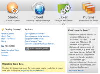
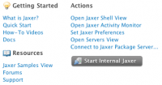

Contents |
What
Aptana Studio is bundled with the Jaxer Ajax server, and includes several sample projects that demonstrate the functionality of Jaxer.
  Aptana Home - Jaxer
Aptana Home - Jaxer
{kind=link}
Jaxer is a new kind of Web server optimized for Ajax pages and applications. It's open source and 100% free. Use Jaxer's server-side JavaScript APIs to interact with databases and object stores, communicate over networks, interact with file systems, manage state with user sessions, and lots more.
As Jaxer runs JavaScript, you can use the same client-side programming skills and Ajax libraries you already know on the server too.
As Jaxer runs JavaScript, you can use the same client-side programming skills and Ajax libraries you already know on the server too.
Changing Jaxer Server Status
{kind=link}
{kind=link}
The Jaxer tab on My Aptana displays a message and either a "Start Internal Jaxer" or "Stop Internal Jaxer" button, depending on the server's current state as well as quick links to articles, resources and the Jaxer community site.
Actions
 Aptana Home - Jaxer
{kind=link}
The actions column lists links several of Aptana Studio's built-in Jaxer tools.
- Open Jaxer Shell View - This view provides you with an ajax command-line console to interact with the Jaxer server.
- Open Jaxer Activity Monitor - This view monitors traffic to your internal Jaxer server.
- Set Jaxer Preferences - Opens the Jaxer preferences screen
- Open Servers View - Use the servers view to start, stop, and manage your servers in Aptana Studio.
- Connect to Jaxer plus Apache Server - This opens a screen allowing you to connect to a Jaxer package server, the pre-configured Jaxer/Apache stand-alone instance.
Getting to My Aptana - Jaxer
{kind=link}
- If My Aptana is not open in Studio, click the home icon or your user name link at the right end of the Studio status bar and then click the Jaxer icon
- If you navigated to another panel in My Aptana, click the Jaxer icon
Related Articles
- Getting Started with Jaxer in Aptana Studio - Quickly familiarize yourself with using Jaxer inside Aptana Studio.